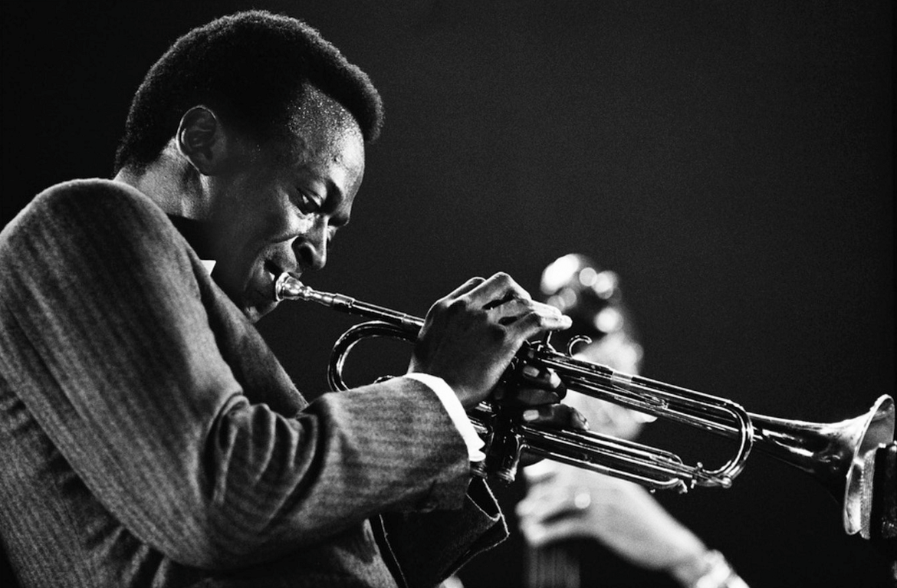

Jazz
재즈(Jazz)는 19세기 후반에서 20세기 초 미국 루이지애나 주 뉴올리언스의 아프리카계 미국인 문화에서 탄생해 20세기 초반~중반에 크게 유행한 음악이다. 유럽 악기와 음악적 틀에 아프리카의 리듬과 화성, 그리고 아프리카계 미국인 특유의 감성이 혼합된 장르이다. 연주를 할 때는 정형화된 음악이라기보다는 즉흥적인 면이 강하다. 미국에서 탄생한 장르이며 초창기에는 흑인과 백인의 인종을 초월한 미국인을 위한 음악이었다. 1980년대 후반, 제100회 미국 의회 회의에서 재즈를 ‘희귀하고 귀중한 미국의 국보’로 지정했다. 다만 재즈가 유행함에 따라 세계적으로 퍼지고 전 세계 민속 음악과 결합되어 갈래가 늘어나면서 현재로선 미국이 재즈의 시작지일지언정 재즈가 미국의 민속음악이라고만 보기엔 경계가 상당히 애매해졌다. 이는 상술했듯 즉흥적인 면이 강하다보니 딱히 그 나라에 맞춰지는 형식 같은 게 없기 때문, 그만큼 작곡하는 측이나 연주하는 측이나 제대로 하기엔 난이도가 높은 장르로도 유명하다.
음악적인 특성으로는 유럽 클래식, 집시 음악, 블루 노트/블루스 등의 스탠다드곡과 블루스 스케일 기반의 즉흥성(Improvisation), 당김음(Syncopation), 스윙(Swing)리듬 등의 여러 음악적 요소가 합쳐져 있다.
주요 사용악기에는 드럼, 콘트라베이스, 첼로, 피아노, 기타, 색소폰, 클라리넷, 트럼펫, 트럼본 등이 있다.